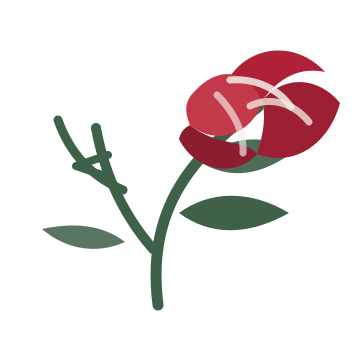

Self-Compassion
Learning to stop treating yourself like an enemy and developing a healthier internal relationship with yourself.

Thorns2RosesThorns2Roses
Coaching
Relationship and life coaching focused on communication, boundaries, healing, resilience, self-worth, and sustainable personal growth.
The Foundation
Learning to stop treating yourself like an enemy and developing a healthier internal relationship with yourself.
Aligning actions, values, communication, accountability, and the way you move through relationships.
Protecting emotional space without weaponizing distance, avoidance, silence, or control.
Building healthier conversations, emotional safety, repair, honesty, and mutual understanding.
Navigating pain, setbacks, grief, burnout, and rebuilding without pretending healing is linear.
Turning insight into sustainable change so growth becomes something lived instead of just understood.
How It Works
Submit a short request form describing what brings you to coaching and what support you are looking for.
Requests are reviewed manually to assess fit, boundaries, scope, and whether coaching is appropriate.
If approved, intake paperwork, consent materials, and scheduling information will be sent by email.
The first session focuses on goals, communication, expectations, boundaries, and coaching fit.
Important
Thorns2Roses Coaching provides coaching services only and does not provide therapy, counseling, psychiatric care, medical treatment, or crisis intervention.
Clients seeking emergency services, mental health treatment, or medical care should contact an appropriate licensed provider or emergency services.
Request Coaching
Thorns2Roses is currently accepting a limited number of coaching requests during launch.
All coaching requests are reviewed manually. If it looks like a good fit, an intake form and scheduling link will be sent by email.
Contact
Email Thorns2Roses directly.